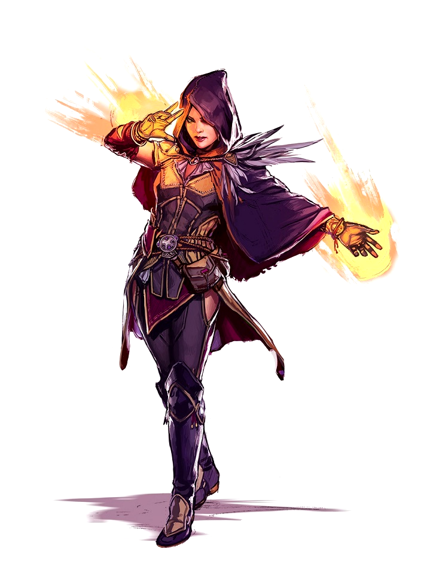

Наследники врожденной магии, избранники богов, потомки чудовищ, пешки судьбы или просто ошибки природы - чародеи носят в себе магию и обладают силой, доступной мало кому из смертных.
Их врожденная магия опасна и в любой момент может вырваться из-под контроля, поэтому они неустанно работают над собой, постепенно усмиряя и раскрывая свой дар и достигая небывалых высот на поприще колдовства. Чародеи наделены очень разными способностями - и очень по-разному ими пользуются. Одни пытаются контролировать свои силы при помощи медитаций и железной дисциплины, становясь в итоге хозяевами своего дара; другие полностью отдаются магии, позволяя ей управлять своей жизнью, что нередко приводит к разрушительным последствиям.
В любом случае чародеи живут тем, что другие заклинатели с трудом осваивают за многие годы: для них магия - это сама жизнь, а не искусство, которому они учились с большим трудом.
Чародеи знают мало заклинаний, но умеют применять их часто, что делает их устрашающей боевой силой. По мере расширения своего репертуара чар они обнаруживают новые и необычные способы их применения, редко замечаемые другими заклинателями. Благодаря своему наследию чародеи получают дополнительные способности, отличающие их друг от друга.
Мировоззрение: Любое.
КЗ:d6.
Стартовое богатство: 2d6 x 10 зм (70 зм в среднем).
Блеф (Хар), Запугивание (Хар), Знание (магия) (Инт), Использование магических устройств (Хар), Колдовство (Инт), Оценка (Инт), Полет (Лвк), Профессия (Мдр), Ремесло (Инт)
Пункты навыков за уровень: 2 + модификатор Интеллекта.
| Ур | БМА | Стойкость | Реакция | Воля | Прочее | Закл/день (кр1) | Закл/день (кр2) | Закл/день (кр3) | Закл/день (кр4) | Закл/день (кр5) | Закл/день (кр6) | Закл/день (кр7) | Закл/день (кр8) | Закл/день (кр9) |
|---|---|---|---|---|---|---|---|---|---|---|---|---|---|---|
| 1 | +0 | +0 | +0 | +2 | Дар наследия, фокусы, заклинания без реагентов | 3 | - | - | - | - | - | - | - | - |
| 2 | +1 | +0 | +0 | +3 | 4 | - | - | - | - | - | - | - | - | |
| 3 | +1 | +1 | +1 | +3 | Дар наследия, заклинание наследия | 2 | 1 | - | - | - | - | - | - | - |
| 4 | +2 | +1 | +1 | +4 | 6 | 3 | - | - | - | - | - | - | - | |
| 5 | +2 | +1 | +1 | +4 | Заклинание наследия | 6 | 4 | - | - | - | - | - | - | - |
| 6 | +3 | +2 | +2 | +5 | 6 | 5 | 4 | - | - | - | - | - | - | |
| 7 | +3 | +2 | +2 | +5 | Черта наследия, заклинание наследия | 6 | 6 | 4 | - | - | - | - | - | - |
| 8 | +4 | +2 | +2 | +6 | 6 | 6 | 5 | 3 | - | - | - | - | - | |
| 9 | +4 | +3 | +3 | +6 | Дар наследия, заклинание наследия | 6 | 6 | 6 | 4 | - | - | - | - | - |
| 10 | +5 | +3 | +3 | +7 | 6 | 6 | 6 | 5 | 3 | - | - | - | - | |
| 11 | +5 | +3 | +3 | +7 | Заклинание наследия | 6 | 6 | 6 | 6 | 4 | - | - | - | - |
| 12 | +6/+1 | +4 | +4 | +8 | 6 | 6 | 6 | 6 | 5 | 3 | - | - | - | |
| 13 | +6/+1 | +4 | +4 | +8 | Черта наследия, заклинание наследия | 6 | 6 | 6 | 6 | 6 | 4 | - | - | - |
| 14 | +7/+2 | +4 | +4 | +9 | 6 | 6 | 6 | 6 | 6 | 5 | 3 | - | - | |
| 15 | +7/+2 | +5 | +5 | +9 | Дар наследия, заклинание наследия | 6 | 6 | 6 | 6 | 6 | 6 | 4 | - | - |
| 16 | +8/+3 | +5 | +5 | +10 | 6 | 6 | 6 | 6 | 6 | 6 | 5 | 3 | - | |
| 17 | +8/+3 | +5 | +5 | +10 | Заклинание наследия | 6 | 6 | 6 | 6 | 6 | 6 | 6 | 4 | - |
| 18 | +9/+4 | +6 | +6 | +11 | 6 | 6 | 6 | 6 | 6 | 6 | 6 | 5 | 3 | |
| 19 | +9/+4 | +6 | +6 | +11 | Черта наследия, заклинание наследия | 6 | 6 | 6 | 6 | 6 | 6 | 6 | 6 | 4 |
| 20 | +10/+5 | +6 | +6 | +12 | Дар наследия | 6 | 6 | 6 | 6 | 6 | 6 | 6 | 6 | 6 |
| Уровень | Кр0 | Кр1 | Кр2 | Кр3 | Кр4 | Кр5 | Кр6 | Кр7 | Кр8 | Кр9 |
|---|---|---|---|---|---|---|---|---|---|---|
| 1 | 4 | 2 | - | - | - | - | - | - | - | - |
| 2 | 5 | 2 | - | - | - | - | - | - | - | - |
| 3 | 5 | 3 | - | - | - | - | - | - | - | - |
| 4 | 6 | 3 | 1 | - | - | - | - | - | - | - |
| 5 | 6 | 4 | 2 | - | - | - | - | - | - | - |
| 6 | 7 | 4 | 2 | 1 | - | - | - | - | - | - |
| 7 | 7 | 5 | 3 | 2 | - | - | - | - | - | - |
| 8 | 8 | 5 | 3 | 2 | 1 | - | - | - | - | - |
| 9 | 8 | 5 | 4 | 3 | 2 | - | - | - | - | - |
| 10 | 9 | 5 | 4 | 3 | 2 | 1 | - | - | - | - |
| 11 | 9 | 5 | 5 | 4 | 3 | 2 | - | - | - | |
| 12 | 9 | 5 | 5 | 4 | 3 | 2 | 1 | - | - | - |
| 13 | 9 | 5 | 5 | 4 | 4 | 3 | 2 | - | - | - |
| 14 | 9 | 5 | 5 | 4 | 4 | 3 | 2 | 1 | - | - |
| 15 | 9 | 5 | 5 | 4 | 4 | 4 | 3 | 2 | - | - |
| 16 | 9 | 5 | 5 | 4 | 4 | 4 | 3 | 2 | 1 | - |
| 17 | 9 | 5 | 5 | 4 | 4 | 4 | 3 | 3 | 2 | - |
| 18 | 9 | 5 | 5 | 4 | 4 | 4 | 3 | 3 | 2 | 1 |
| 19 | 9 | 5 | 5 | 4 | 4 | 4 | 3 | 3 | 3 | 2 |
| 20 | 9 | 5 | 5 | 4 | 4 | 4 | 3 | 3 | 3 | 3 |
Ношение брони и обращение с оружием:Чародей умеет обращаться со всем простым оружием, но не может использовать доспехи и щиты. Доспехи мешают чародеям делать жесты, необходимые для применения заклинаний, что может привести к провалу при их сотворении.
Заклинания:Чародей умеет творить мистические заклинания из списка. Он может сотворить любое известное ему заклинание, не готовя его заранее. Чтобы освоить или применить заклинание, чародею нужно значение Харизмы, равное минимум 10 + круг заклинания. СЛ испытания против заклинаний чародея равна 10 + круг заклинания + модификатор его Харизмы.
Подобно другим заклинателям, чародей может применять ограниченное количество заклинаний каждого круга в день. Его базовый дневной запас заклинаний приведен в таблице
Кроме того, он получает дополнительные заклинания в день, если у него достаточно высокая Харизма (см. таблицу «Модификаторы характеристики и дополнительные заклинания»).
Каждый чародей знает весьма ограниченное количество заклинаний. На 1 уровне он узнает четыре заклинания 0 круга и два - 1 круга (по своему выбору). На каждом следующем уровне он изучает одно или более новых заклинаний, как показано в таблице «Количество известных чародею заклинаний». В отличие от количества заклинаний в день, количество известных чародею заклинаний от его Харизмы не зависит: цифры в таблице фиксированные. Эти заклинания можно взять как из общего списка чародея/волшебника, так и получить из необычных источников.
Начиная с 4 уровня и далее на каждом четном уровне (6, 8 и т. д.) чародей может заменить одно из известных ему заклинаний каким-то другим. При этом он теряет прежнее и получает взамен новое. Круг обоих заклинаний должен быть одинаковым. Каждый раз чародей может заменить только одно заклинание и выбирает, делать ли это, в тот момент, когда получает новые заклинания на этом уровне.
В отличие от волшебника или жреца, чародею нет нужды заранее готовить свои заклинания. Он всегда может сотворить любое известное ему заклинание, если еще не израсходовал свой дневной запас чар соответствующего круга.
Наследие:У каждого чародея есть внутренний источник магии, от которого исходят его заклинания, дополнительные черты, дополнительный классовый навык и другие способности. Этот источник обычно появляется благодаря кровному родству с волшебным существом или особым его участием в семейной истории чародея. Возможно, чародей состоит в дальнем родстве с драконом, а быть может, его дедушка заключил сделку с дьяволом. Каким бы ни был источник, влияние наследия проявляется по мере набора чародеем опыта. Свое наследие он выбирает на 1 уровне чародея, и этот выбор нельзя впоследствии изменить.
На 3 уровне и каждые два уровня после этого чародей получает дополнительное заклинание, зависящее от его наследия. Эти чары идут в дополнение к тем, что указаны в таблице «Количество известных чародею заклинаний». Их нельзя заменять на другие на более высоких уровнях.
На 7 уровне и каждые шесть уровней после этого чародей получает дополнительную черту, выбранную из списка, соответствующего его наследию. Чародей должен соответствовать всем требованиям такой черты.
Фокусы:Чародеи знают некоторое количество фокусов (заклинаний 0 круга), как указано в таблице «Количество известных чародею заклинаний». Эти заклинания похожи на любые другие, но они не тратятся при применении, и их можно использовать сколько угодно раз в день.
Заклинания без реагентов:На 1 уровне чародей получает черту Заклинания без реагентов в качестве дополнительной.
Несколько поколений назад ваши предки подверглись демоническому влиянию. Оно проявляется во всех ваших родственниках, но в вас особенно сильно. Такое наследие часто подталкивает к хаосу или злу, но ваша собственная судьба (и мировоззрение) зависят только от вас.
Классовый навык:Знание (планы).
Дополнительные заклинания:устрашение (3), бычья сила (5), ярость (7), каменная кожа (9), возвращение (11), трансформация (13), высшая телепортация (15), нечестивая аура (17), призыв чудовища IX (19).
Дополнительные черты:Бойня, Внушительная стойкость, Мощное заклинание, Разрушение+, Сокрушительный удар, Таран+, Усиленный призыв, Эксперт (Знание (планы)).
Талант наследия:Когда вы применяете заклинание подшкоды призывания, все призванные существа получают СУ/добро, равное 1/2 вашего уровня чародея (минимум 1). Это СУ не складывается с любым имеющимся у таких существ СУ.
Дары наследия:Некоторые считают вас одержимым, но вы-то знаете, что это не так. Демоническое влияние вашей крови растет, и вы обретаете все новые силы.
Когти (Св): На 1 уровне вы можете отращивать когти в качестве свободного действия. Они считаются естественным оружием и позволяют вам проводить в качестве полной атаки две атаки с вашим полным БМА. При попадании когти наносят 1d4 урона каждый (1d3, если вы небольшого размера) плюс модификатор Силы.
На 5 уровне эти когти становятся магическим оружием, что учитывается при преодолении СУ.
На 7 уровне базовый урон от когтей возрастает до 1d6, если вы среднего размера, и до 1d4, если небольшого.
На 11 уровне эти когти становятся огненным оружием и наносят при попадании дополнительно 1d6 урона огнем.
Вы можете применять эту способность 3 + модификатор вашей Харизмы раундов в день. Эти раунды необязательно должны идти подряд.
Демоническая устойчивость (Экс): На 3 уровне вы получаете устойчивость 5 к электричеству и +2 к испытаниям против яда.
На 9 уровне устойчивость к электричеству увеличивается до 10, а бонус к испытаниям против яда до +4.
Сила Бездны (Экс): На 9 уровне вы получаете +2 (врожденый) к Силе. Этот модификатор возрастает до +4 на 13 уровне и до +6 на 17.
Больше призванных (Св): Начиная с 15 уровня, когда вы используете заклинание призыв чудовища и призываете существ подтипа «демон» или с шаблоном «бестия», появляется на одно соответствующее существо больше.
Демоническая мощь (Св): На 20 уровне сила Бездны преисполняет вас. У вас появляется невосприимчивость к электричеству и яду, устойчивость 10 к кислоте, холоду и огню, а также телепатия, позволяющая вам общаться с любым существом, говорящим на каком-либо языке, в пределах 60 футов.
Среди ваших предков был дракон, и его древняя магия течет в ваших жилах.
Классовый навык:Внимание.
Дополнительные заклинания:магический доспех (3), устойчивость к стихии (5), полет (7), ужас (9), устойчивость к магии (11), облик дракона I (13), облик дракона II (15), облик дракона III (17), желание (19).
Дополнительные черты:Бой вслепую, Быстрое заклинание, Внушительная стойкость, Живучесть, Сокрушительный удар, Улучшенная инициатива, Эксперт (Знание (магия)), Эксперт (Полет).
Талант наследия:Когда вы творите заклинание с дескриптором стихии, соответствующим виду вашего драконьего наследия, это заклинание наносит +1 пункт урона за каждую кость, бросаемую при определении урона.
Дары наследия:Вы носитель силы дракона, которая может проявиться по-разному. На 1 уровне вы выбираете один вид цветного или металлического дракона. Изменить этот выбор впоследствии нельзя. В зависимости от выбранного вида дракона вы получаете устойчивость к определенным типам стихий, а также возможность наносить дополнительный урон.
| Вид дракона | Вид стихии | Форма дыхания |
|---|---|---|
| Белый | Холод | 30-футовый конус |
| Зеленый | Кислота | 30-футовый конус |
| Красный | Огонь | 30-футовый конус |
| Синий | Электричество | 60-футовая линия |
| Черный | Кислота | 60-футовая линия |
| Бронзовый | Электричество | 60-футовая линия |
| Золотой | Огонь | 30-футовый конус |
| Латунный | Огонь | 60-футовая линия |
| Медный | Кислота | 60-футовая линия |
| Серебряный | Холод | 30-футовый конус |
Когти (Св): На 1 уровне вы можете отращивать когти в качестве свободного действия. Они считаются естественным оружием и позволяют вам наносить в качестве полной атаки две атаки с вашим полным БМА. При попадании когти наносят 1d4 урона (1d3, если вы небольшого размера), плюс модификатор Силы.
На 5 уровне эти когти становятся волшебными и учитываются при преодолении СУ как магическое оружие.
На 7 уровне базовый урон от них возрастает до 1d6, если вы среднего размера, и до 1d4, если небольшого.
На 11 уровне при попадании эти когти наносят дополнительно 1d6 урона от стихии, соответствующей вашему дракону-предку.
Вы можете применять эту способность 3 + модификатор вашей Харизмы раундов в день. Эти раунды необязательно должны идти подряд.
Драконья устойчивость (Экс): На 3 уровне вы получаете устойчивость 5 к стихии, соответствующей вашему виду дракона, и бонус +1 (естественная броня) к КБ.
На 9 уровне ваша устойчивость к стихии возрастает до 10, а бонус к КБ до +2.
На 15 уровне ваш бонус к КБ возрастает до +4.
Губительное дыхание (Св): На 9 уровне у вас появляется губительное дыхание, способное нанести 1d6 урона за уровень чародея стихией, соответствующей вашему виду дракона. Попавшие в зону губительного дыхания проходят испытание Реакции, чтобы уменьшить урон вдвое. СЛ испытания равна 10 + 1/2 уровня чародея + модификатор вашей Харизмы. Форма губительного дыхания зависит от вида дракона (как указано в таблице выше). На 9 уровне вы можете применять эту способность один раз в день, на 17 уровне - два раза в день, на 20 уровне - три раза в день.
Крылья (Св): На 15 уровне у вас на спине вырастают кожистые драконьи крылья (основное действие), дающие вам скорость полета 60 футов и среднюю маневренность. Вы можете убирать эти крылья (свободное действие).
Мощь змея (Св): На 20 уровне ваше драконье наследие проявляется в полной мере. Вы получаете слепое чутье (60 футов), невосприимчивость к параличу, сну и урону от стихии, соответствующей вашему виду дракона.
Когда-то ваш предок заключил сделку с дьяволом, и это до сих пор влияет на жизнь вашей семьи. Вам это влияние дает особые силы и способности. Хотя вы все еще хозяин своей судьбы, всегда есть риск, что ваш путь все-таки приведет вас в Преисподнюю.
Классовый навык:Дипломатия.
Дополнительные заклинания:защита от добра (3), опаляющий луч (5), внушение (7), приворот (чудовище) (9), подчинение гуманоида (11), потусторонний слуга (только дьяволы и существа с шаблоном «бестия») (13), высшая телепортация (15), слово силы: шок (17), метеориты (19).
Дополнительные черты:Бой вслепую, Длительное заклинание, Защитная стойка, Обманщик, Преодолевающая магия, Разоружение+, Стальная воля, Эксперт (Знание (планы)).
Талант наследия:Когда вы творите заклинание подшколы обольщения, СЛ испытаний им возрастает на +2.
Дары наследия:Вы можете обращаться к силам Преисподней, однако вы не защищены от ее тлетворного влияния. Все имеет свою цену.
Тлетворное прикосновение (Пс): На 1 уровне вы можете, проведя по противнику в ближнем бою атаку касанием, ввести его в состояние потрясения на количество раундов, равное 1/2 вашего уровня чародея (минимум 1). Потрясенные существа при этом излучают ауру зла, как если бы они были злыми потусторонними существами (см. определение мировоззрения: зло). Эффекты нескольких тлетворных прикосновений не складываются, но увеличивают длительность. Вы можете применять эту способность 3 + модификатор вашей Харизмы раз в день.
Дьявольская устойчивость (Экс): На 3 уровне вы получаете устойчивость 5 к огню и +2 к испытаниям против ядов. На 9 уровне ваша устойчивость к огню возрастает до 10, а модификатор к испытаниям против ядов до +4.
Адское пламя (Пс): На 9 уровне вы можете вызвать столп адского пламени - взрыв радиусом 10 футов, наносящий 1d6 урона от огня за уровень чародея. Все, кто оказываются в этом столпе, должны пройти испытание Реакции, чтобы уменьшить урон вдвое. Добрые существа, провалившие испытание, оказываются потрясены на количество раундов, равное вашему уровню чародея. СЛ испытания равна 10 + 1/2 вашего уровня чародея + модификатор вашей Харизмы. На 9 уровне вы можете применять эту способность один раз в день, на 17 уровне - два раза в день, на 20 уровне - три раза в день. Дистанция действия этой способности равна 60 футам.
Черные крылья (Св): На 15 уровне вы можете в качестве основного действия отращивать кожистые крылья, как у летучей мыши, позволяющие летать со скоростью 60 футов и средней маневренностью. Эти крылья можно убрать (свободное действие).
Мощь Преисподней (Св): На 20 уровне вы преисполняетесь темной силы, обретая невосприимчивость к огню и яду, устойчивость 10 к кислоте и холоду, а также способность видеть в любой темноте на расстоянии до 60 футов.
Ваше наследие - могильный холод. Возможно, кто-то из ваших предков стал личем или вампиром, а может, вы сами родились мертвым и только потом ожили. В любом случае смерть теперь сопровождает вас всюду.
Классовый навык:Знание (религия).
Дополнительные заклинания:ледяное прикосновение (3), ложная жизнь (5), касание вампира (7), оживить мертвецов (9), волна усталости (11), упокоение нежити (13), палец смерти (15), жуткое иссушение (17), вытягивание жизни (19).
Дополнительные черты:Безжестовое заклинание, Боевая магия, Двужильный, Живучесть, Крепкий орешек, Любимая школа магии, Стальная воля, Эксперт (Знание (религия)).
Талант наследия:Ваши заклинания, действующие на разум гуманоидов, могут производить эффект и на нежить, если она материальна и при жизни была гуманоидом.
Дары наследия:Вы можете обращаться к силам смерти. Однако чем больше вы обращаетесь к ним, тем больше рискуете сами превратиться в умертвие.
Могильное прикосновение (Пс): Начиная с 1 уровня вы можете в качестве основного действия совершить в ближнем бою атаку касанием, от которой живое существо становится потрясенным на количество раундов, равное 1/2 вашего уровня чародея (минимум 1). Если вы касаетесь уже потрясенного существа, оно становится напуганным на 1 раунд, если кодичество его КЗ меньше, чем ваш уровень чародея. Вы можете применять эту способность 3 + модификатор вашей Харизмы раз в день.
Дар смерти (Св): На 3 уровне у вас появляется устойчивость 5 к холоду и СУ 5/- от несмертельного урона. На 9 уровне ваша устойчивость к холоду увеличивается до 10, а СУ от несмертельного урона до 10/-.
Мертвая хватка (Пс): Начиная с 9 уровня вы можете призывать из земли множество костяных рук, хватающих и рвущих когтями ваших врагов. Они появляются из-под земли в пределах дистанции 60 футов от вас в виде взрыва радиусом 20 футов. Все в этой области получают 1d6 режущего урона за ваш уровень чародея. Если они успешно проходят испытание Реакции, то получают только половину урона. Те, кто не прошел испытание, теряют способность перемещаться на 1 раунд. СЛ испытания равна 10 + 1/2 вашего уровня чародея + модификатор вашей Харизмы. Через 1 раунд руки исчезают. Руки могут появиться только из твердой поверхности. С 9 уровня вы можете применять эту способность один раз в день, с 17 уровня - два раза в день, с 20 уровня - три раза в день.
Бесплотная форма (Пс): Начиная с 15 уровня вы можете становиться бестелесным на 1 раунд за уровень чародея. При этом вы временно начинаете относиться к подтипу «бестелесный».
Будучи бестелесным, вы получаете только половину урона от волшебных материальных источников и не получаете урона от неволшебного оружия и предметов. Ваши собственные заклинания также наносят лишь половину обычного урона материальным существам; те, что урона не наносят, работают как обычно. Вы можете применять эту способность один раз в день.
Один из нас (Экс): Начиная с 20 уровня ваше тело подвергается тлению (как именно это выгдядит, вы определяете сами). Нежить считает вас за своего. У вас появляется невосприимчивость к холоду, несмертельному урону, параличу и сну. Кроме того, вы получаете СУ 5/-. Неразумная нежить вас не замечает, если вы ее не атакуете. Также у вас появляется бонус +4 (боевой дух) к испытаниям против заклинаний и псевдозаклинаний нежити.
Ваша семья издавна занималась магией и мистическими искусствами. Хотя многие из ваших родственников были волшебниками, сами вы освоили магию без специального обучения.
Дополнительные заклинания:опутывание (7), безудержный смех (10), ускорение (13), замешательство (16).
Дополнительные черты:Боевые рефлексы, Уворот, Улучшенная инициатива, Внушительный вид, Молниеносная реакция, Подвижность, Преграда.
Дары наследия:Вы можете обращаться к силам смерти. Однако чем больше вы обращаетесь к ним, тем больше рискуете сами превратиться в умертвие.
Критическое замешательство (Св): На 1-м уровне сила фей наполняет ваши атаки. Каждый раз, когда вы подтверждаете критическое попадание, цель должна преуспеть в испытании Воли, иначе она будет в замешательстве 1 раунд. СЛ этого испытания равна 10 + 1/2 вашего уровня кровавой ярости + модификатор вашей Выносливости. Это эффект принуждения, влияющий на разум.
Атака с разбега в прыжке (Св): На 4 уровне вы можете легко преодолевать заросли и подобные препятствия во время атаки с разбега. Когда вы совершаете атаку с разбега, вы игнорируете сложную местность (но не других существ). Вы можете перемещаться по ней с нормальной скоростью, и это не мешает вашей атаке с разбега.
Размытое передвижение (Св): На 8-м уровне ваши движения становятся размытыми. Пока вы перемещаетесь хотя бы на 10 футов, вы получаете эффект расплывчатости на 1 раунд.
Скоростное кровавое неистовство (Пс): На 12-м уровне во время кровавого неистовства вы действуете так, как будто вы находитесь под действием ускорения.
Единение с природой (Св): На 16-м уровне существа животного или растительного типа не атакуют вас, если только они не были вынуждены сделать это с помощью магии или если вы не напали на них первым. Три раза в день вы можете перемещаться от одного дерева к другому, аналогично древесному пути с половиной дальности передвижения. Переход от одного дерева к другому - это сопутствующее действие. У вас есть эти преимущества постоянно, даже если вы не в кровавом неистовстве.
Ярость фей (Св): На 20-м уровне, войдя в кровавое неистовство, вы можете выбрать один тип существ (и подтип для гуманоидов или потусторонних существ), на которые может воздействовать особое свойство оружия Убийцы. Считается, что все ваши атаки в ближнем бою имеют особую свойство Убийцы, соответствующую этому типу. Эта способность не суммируется с другими видами этого особого свойства.
Переменчивая и капризная сила фей передается в вашей семье либо благодаря родству с волшебным народом, либо благодаря его чарам. Вы эмоциональнее многих и с одинаковой легкостью впадаете в ярость и предаетесь радости.
Классовый навык:Знание (природа).
Дополнительные заклинания:опутывание (3), безудержный смех (5), глубокий сон (7), яд (9), древесный путь (11), обманка (13), эфирная дверь (15), безудержная пляска (17), метаморфоза (19).
Дополнительные черты:Быстрое заклинание, Стрельба вблизи, Подвижность, Молниеносная реакция, Прицельная стрельба, Уворот, Улучшенная инициатива, Эксперт (Знание (природа)).
Талант наследия:Когда вы творите заклинание подшколы принуждения, увеличьте СЛ испытания против этого заклинания на 2.
Дары наследия:У вас особая связь с природой, и со временем она становится только сильнее, влияя на вашу магию.
Смешинка (Пс): На 1 уровне вы можете атакой касанием в ближнем бою заставить существо безудержно смеяться 1 раунд. Оно при этом может предпринять только сопутствующее действие, но защищается как обычно. Существо, попавшее под действие смешинки, становится невосприимчивым к ее эффектам на 24 часа. Вы можете применять эту способность 3 + модификатор вашей Харизмы раз в день. Это эффект, действующий на разум.
В лесу как дома (Экс): Начиная с 3 уровня вы можете беспрепятственно двигаться по любому подлеску (включая колючие кустарники, заросли и иную подобную местность) со своей обычной скоростью, не получая урона. Магически созданные или заколдованные заросли и колючки действуют на вас по обычным правилам.
Отвод глаз (Пс): Начиная с 9 уровня вы можете становиться невидимым (как при действии заклинания высшая невидимость) на количество раундов в день, равное вашему уровню чародея. Эти раунды необязательно должны идти подряд.
Магия фей (Св): Начиная с 15 уровня вы можете перебросить кость при любой проверке УЗ для преодоления УкМ. Применять эту способность можно после броска кости, но перед объявлением результатов. Вы принимаете результат второго броска, даже если он хуже. Применять эту способность вы можете неограниченное количество раз в день.
Душа феи (Св): Начиная с 20 уровня мир фей окончательно овладевает вашей душой. У вас появляется невосприимчивость к яду и СУ 10/холодное железо. Существа с типом «животное» на вас не нападают, если их к этому не принуждают магически. Один раз в день вы можете применять путь в тенях в качестве псевдозаклинания, используя свой уровень чародея в качестве УЗ.
Ваш род благословили небесные силы, воплотившись в вашем предке или как-то иначе вмешавшись в вашу жизнь. Хотя их дары подталкивают вас к пути добра, вы все же сами являетесь владыкой своей судьбы (и мировоззрения).
Классовый навык:Лечение.
Дополнительные заклинания:благословение (3), устойчивость к стихии (5), магический круг против зла (7), снятие проклятия (9), огненный столп (11), высшее рассеивание магии (13), изгнание (15), солнечная вспышка (17), врата (19).
Дополнительные черты:Бой верхом, Длительное заклинание, Подвижность, Стальная воля, Уворот, Удар на скаку, Фехтование, Эксперт (Знание (религия)).
Талант наследия:Когда вы применяете заклинание подшколы призывания, все призванные существа получают СУ/зло, равное 1/2 вашего уровня чародея (минимум 1). Оно не складывается с любым имеющимся у таких существ СУ.
Дары наследия:Ваше небесное наследие дает вам великие силы, но у них есть цена. Существа с Верхних планов пристально следят за вашими действиями.
Небесный огонь (Пс): Начиная с 1 уровня вы можете в качестве основного действия выпустить луч небесного огня в любого противника в радиусе 30 футов от вас, попав по нему дистанционной атакой касанием. Злым существам этот луч наносит 1d4 урона + 1 за каждые два уровня чародея. Этот урон является сакральным, от него не защищают устойчивость или невосприимчивость к какой-либо энергии.
Добрым существам такой луч восстанавливает 1d4 П3 + 1 за каждые два уровня чародея; каждое доброе существо может таким образом быть исцелено не более одного раза в день. На нейтральных существ этот луч не действует. Вы можете применять эту способность 3 + модификатор вашей Харизмы раз в день.
Небесная устойчивость (Экс): На 3 уровне вы получаете устойчивость 5 к кислоте и холоду. На 9 уровне она увеличивается до 10.
Небесные крылья (Св): На 9 уровне вы получаете способность ненадолго обретать перистые крылья и летать в течение количества минут в день, равного уровню чародея, со скоростью 60 и хорошей маневренностью. Эти минуты необязательно должны идти подряд, но общее время нельзя дробить на интервалы менее минуты.
Непреклонность (Св): Начиная с 15 уровня вы можете перебросить только что брошенную кость при совершении одного из следующих действий: атака, прохождение испытания, проверка навыка или характеристики.
Эту способность можно применять после броска игральной кости, но только перед тем, как ведущий объявит результаты.
Вы принимаете результат второго броска, даже если он хуже. Эту способность можно применять 1 раз в день.
Вознесение (Св): На 20 уровне небесная сила преисполняет вас. Вы становитесь невосприимчивы к кислоте, холоду и окаменению. Вы также получаете устойчивость 10 к электричеству и огню, а также бонус +4 (народ) к испытаниям против ядов. Теперь вы можете пользоваться способностью небесных крыльев сколько угодно времени.
Наконец, вы обретаете способность беседовать с любым существом, которое умеет говорить на каком-либо языке (как под действием заклинания полиглот).
В вас течет кровь странных и чуждых существ. Вы причудливо мыслите и находите неожиданные решения проблем. Со временем наследие начинает проявляться и в самом вашем теле.
Классовый навык:Знание (подземелья).
Дополнительные заклинания: увеличение гуманоида (3), увидеть невидимое (5), полиглот (7), черные щупальца (9), слабоумие (11), вуаль (13), планарный переход (15), сокрытие разума (17), метаморфоза (19)
Дополнительные черты:Безмолвное заклинание, Боевая магия, Захват+, Мастер кулачного боя, Разоружение+, Стальная воля, Улучшенная инициатива, Эксперт (Знание (подземелья)).
Талант наследия:Когда вы применяете заклинание подшколы полиморфизма, увеличивайте его длительность на 50% (минимум 1 раунд). Этот эффект не складывается с эффектом, полученным от черты Длительного заклинания.
Дары наследия:Чародеи с противоестественным наследием постепенно проявляют свою чуждость все больше и больше, хотя заметить это можно, только когда они активно используют свои способности.
Кислотный луч (Пс): Начиная с 1 уровня вы можете в качестве основного действия выпустить в цель в радиусе 30 футов от вас кислотный луч. Это является дистанционной атакой касанием. Луч наносит 1d6 урона кислотой + 1 за каждые два уровня чародея. Вы можете применять эту способность 3 + модификатор вашей Харизмы раз в день.
Длинные конечности (Экс): На 3 уровне ваша зона досягаемости увеличивается на 5 футов для атак касанием в ближнем бою. Контролируемая вами зона при этом не увеличивается. На 11 уровне она увеличивается еще на 5 футов (суммарно 10), а на 17 - еще на 5 (суммарно на 15).
Необычная анатомия (Экс): На 9 уровне ваша анатомия меняется, что дает вам 25%-ный шанс избежать критического удара или атаки исподтишка (они будут считаться обычным попаданием). На 13 уровне этот шанс возрастает до 50%.
Противоестественное сопротивление (Св): На 15 уровне вы получаете УкМ, равную уровню чародея + 10.
Неестественное тело (Экс): На 20 уровне строение вашего тела неестественно преображается. Теперь вы невосприимчивы к критическим ударам и атакам исподтишка. Кроме того, у вас появляется слепозрение (60 футов) и снижение урона 5/-.
Сила стихии живет в вас, и вам непросто управлять ее яростью. Возможно, среди ваших предков было потустороннее существо-элементаль или же ваши родственники попади под воздействие редкого стихийного эффекта.
Классовый навык:Знание (планы).
Дополнительные заклинания: пылающие руки* (3), опаляющий луч* (5), защита от стихии (7), стихийная форма I (9), стихийная форма II (11), стихийная форма III (13), стихийная форма IV (15), призыв чудовища VIII (только элементалей) (17), туча элементалей (19).
* Эти заклинания всегда наносят урон, соответствующий вашей стихии, и имеют соответствующий дескриптор.
Дополнительные черты:Внушительная стойкость, Молниеносная реакция, Мощное заклинание, Сокрушительный удар, Уворот, Улучшенная инициатива, Фехтование, Эксперт (Знание (планы)).
Талант наследия:Когда вы применяете заклинание, наносящее урон стихией, вы можете изменить тип урона, чтобы он соответствовал вашему наследию. При этом дескриптор заклинания меняется соответственно.
Дары наследия:В вас живет сила одной из четырех стихий, и в час нужды вы обращаетесь к ней. На 1 уровне вы выбираете одну из стихий: воду, воздух, землю или огонь. В дальнейшем этот выбор изменить нельзя. Вы также получаете устойчивость и иные способности, связанные с этой стихией.
| Вид стихии | Урон стихией | Путь стихии |
|---|---|---|
| Воздух | Электричество | Полет 60 футов (средняя) |
| Земля | Кислота | Рытье 30 футов |
| Огонь | Огонь | Базовая скорость +30 футов |
| Вода | Холод | Плавание 60 футов |
Стихийный луч (Пс): Начиная с 1 уровня вы можете в качестве основного действия выпускать стихийный луч в любого противника в радиусе 30 футов от вас. Попав дистанционной атакой касанием, вы наносите 1d6 урона от вида энергии, соответствующей вашей стихии, +1 за каждые два уровня чародея. Вы можете применять эту способность 3 + модификатор вашей Харизмы раз в день.
Устойчивость к стихии (Экс): На 3 уровне вы получаете устойчивость 10 к своему виду стихии. На 9 уровне эта устойчивость увеличивается до 20.
Стихийный взрыв (Пс): Начиная с 9 уровня вы можете один раз в день производить стихийный взрыв радиусом в 20 футов в пределах дистанции до 60 футов. Этот взрыв наносит 1d6 урона за уровень чародея от вашей стихии. Попавшие в зону взрыва получают возможность пройти испытание Реакции, чтобы уменьшить урон вдвое. Провалившие испытание становятся уязвимы к вашей стихии до конца вашего следующего хода. СЛ такого испытания равна 10 + 1/2 вашего уровня чародея + модификатор вашей Харизмы. На 9 уровне вы можете применять эту способность один раз в день, на 17 уровне - два раза в день, на 20 уровне - три раза в день.
Путь стихии (Св): На 15 уровне вы получаете новый способ перемещения или улучшение уже имеющегося в зависимости от выбранной стихии (см. таблицу выше).
Стихийная форма (Св): На 20 уровне все ваше тело наполняется энергией стихии. Вы становитесь невосприимчивы к атакам исподтишка, критическим ударам и урону от своего типа стихии.
У вашего рода великая судьба. Возможно, ваше рождение было предсказано или оно случилось во время знаменательного события вроде солнечного затмения. Вне зависимости от того, как именно проявилось ваше наследие, оно сулит вам великое будущее.
Классовый навык:Знание (история).
Дополнительные заклинания: сигнал тревоги (З), расплывчатость (5), защита от стихии (7), свобода движений (9), разрушение чар (11), обманка (13), отражение заклинаний (15), миг предвидения (17), видение будущего (19).
Дополнительные черты:Волшебный удар, Двужильный, Крепкий орешек, Лидерство, Максимизированное заклинание, Молниеносная реакция, Уверенное владение оружием, Эксперт (Знание (история)).
Талант наследия:Когда вы применяете заклинание с дистанцией «на себя», то получаете на 1 раунд бонус удачи ко всем испытаниям, равный кругу этого заклинания.
Дары наследия:Вас ждет великая судьба, и мистические силы берегут вас для встречи с ней.
Прикосновение судьбы (Пс): На 1 уровне вы можете в качестве основного действия коснуться существа, давая ему на 1 раунд бонус (интуитивный), равный 1/2 вашего уровня чародея (минимум 1), к испытаниям, проверкам попадания, навыков и характеристик. Вы можете применять эту способность 3 + модификатор вашей Харизмы раз в день.
Хранимый судьбой (Св): Начиная с 3 уровня вы получаете бонус +1 (удача) ко всем испытаниям, а также к КБ в предбоевом раунде и от всех атак, о которых вы еще не знаете. На 7 уровне и каждые четыре уровня спустя этот модификатор увеличивается на 1, до максимума в +5 на 19.
Так было суждено (Св): Начиная с 9 уровня вы можете один раз в день перебросить кость при атаке, подтверждении критического удара или проверке УЗ для преодоления УкМ. Эту способность можно применять после того, как кость брошена, но перед объявлением результатов.
Вы принимаете результат второго броска, даже если он хуже.
Начиная с 17 уровня вы можете применять эту способность дважды в день.
Цель близка (Св): На 15 уровне судьба уверенно ведет вас. Раз в день, когда нанесенный вам урон должен убить вас, вы имеете право пройти испытание Воли со СЛ 20. При успехе вы остаетесь с -1 ПЗ и автоматически стабилизируетесь. К этому испытанию могут применяться модификаторы от способности хранимый судьбой.
Неотвратимость (Св): На 20 уровне вы совсем близки к исполнению своего предназначения. Любые критические удары, нанесенные вам, подтверждаются только при выпадении 20 на d20. Любые ваши критические удары заклинаниями подтверждаются автоматически. Раз в день вы можете автоматически пройти любую проверку УЗ для преодоления УкМ. О применении этой способности вы обязаны объявлять до того, как бросите игральную кость для проверки УЗ.
Назад к списку классов